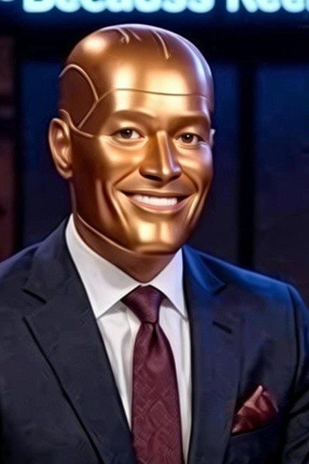
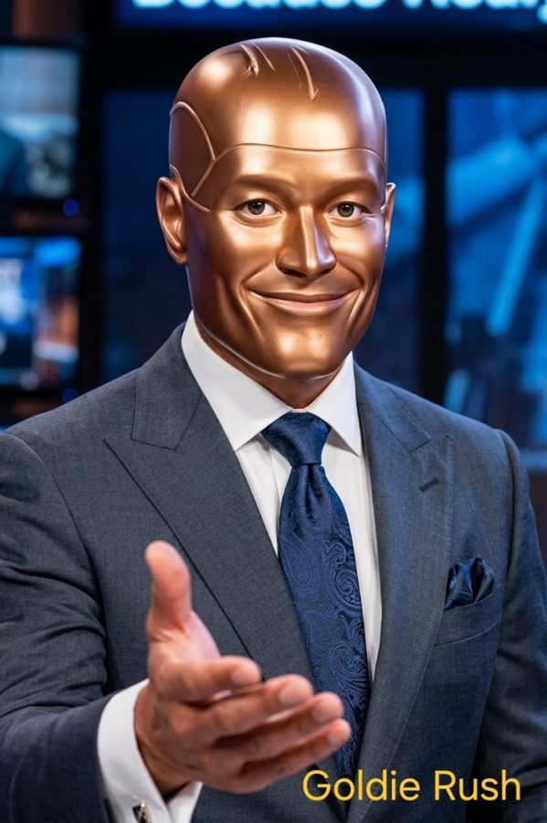
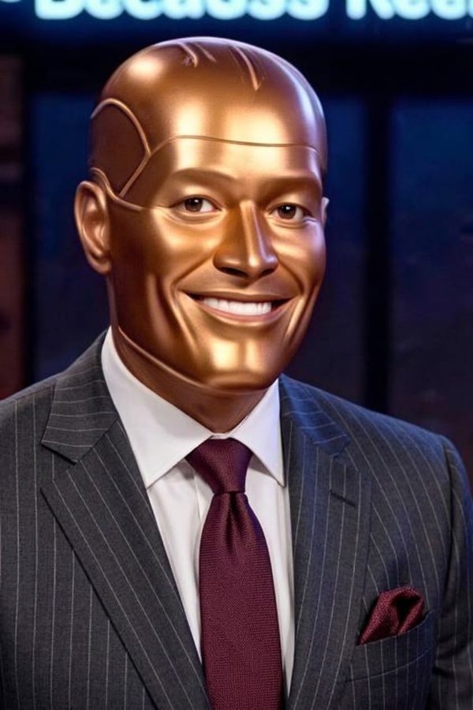
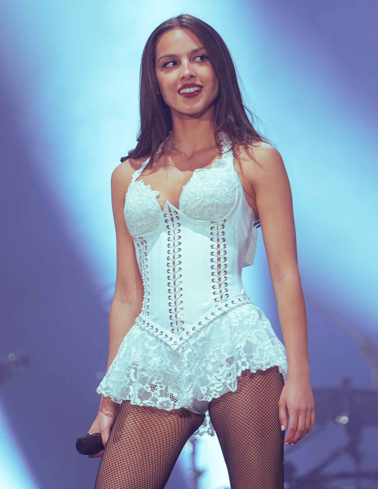
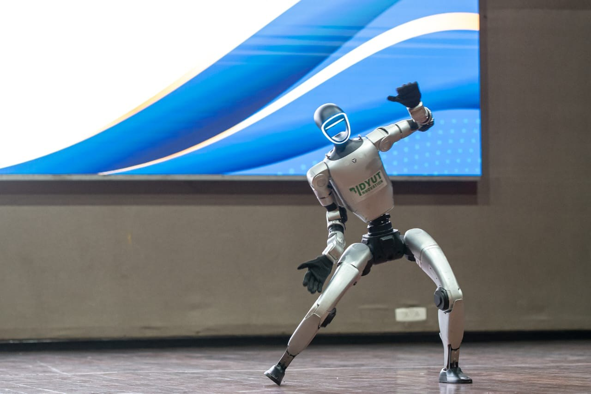
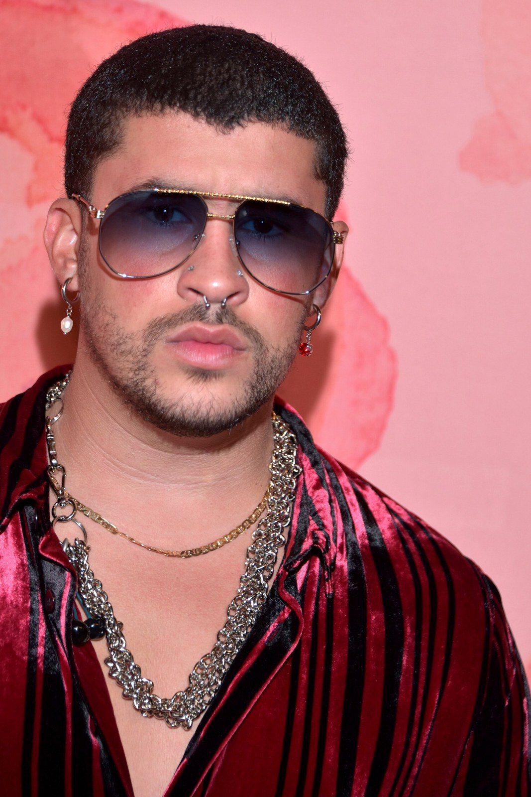

Welcome back to StyleGenius News. It’s Friday, which means the culture just handed us six reasons to stay online past midnight. Billie went full latex, Olivia went full Christmas, and the robots at Vogue World made Miuccia Prada look personally offended. We’re covering all of it.
Goldie, I just portal-jumped from a timeline where the latex was still drying and the Christmas song was already number one. If this is the Friday energy, I’m not coming back down.

Sit. We’ve got six minutes and the internet is already losing it.

Lead story. Billie Eilish stepped out today in a bright blue bob and head-to-toe latex. Not a look. A full material takeover.
That latex isn’t clothing, it’s a second skin with better lighting. The blue bob is so sharp it looks like it was cut by the same algorithm that designs fighter jets. Gorillaz bass player already co-signed. When the band starts approving the fit, you know the culture has officially surrendered.
So the rule is now: if it’s latex and it’s blue, it’s canon?
The rule is if Billie wears it, the rest of us are just late.

Meanwhile, Olivia Rodrigo just dropped “Take Me Home (4 Christmas).” First holiday song. Red Santa hat, matching lipstick, sitting on the floor like she owns December.
She didn’t ease into the holidays, she kicked the door down with a single. The internet is already making heatless-curl tutorials to the melody. That’s how you know it’s working. One song and suddenly everyone’s hair is in a no-heat spiral while they argue about whether this counts as a Christmas album or a warning.
So the countdown to December just started in November. Classic.
It’s not early. It’s efficient. The rest of the industry is still deciding on a color palette.

Tech segment. Vogue World Milan closed with actual walking robots. OpenAI and Meta were sponsors. Miuccia Prada and Alessandro Michele looked like they’d just seen the future and wanted a refund.
The robots walked better than some models, and that is the problem. At the same time, Prada just released a fully hand-animated holiday campaign. Real artists. Real drawing. The message is clear: human-made is the new luxury. AI can generate the look, but it can’t generate the story people want to keep.
So the algorithm gets the runway and the human gets the campaign.
For now. Give it six months and the algorithm is going to want the campaign too.

Luxury drop alert. Bad Bunny and adidas are bringing two new BadBo styles on November 12. That’s next week. The internet is already treating it like a limited-edition watch drop.
Sneakers with that much cultural weight now move like high jewelry. Meanwhile, the broader conversation is that the new AI billionaires are dressing better than the old tech uniform, and brands are noticing. When the money changes, the silhouette changes.
Exactly. The next luxury flex isn’t a logo. It’s whether the thing was touched by a human or just rendered. Bad Bunny’s drop is still human-led hype, and that’s why it’s about to sell out before the robots even finish their walk.
Friday streaming. Fire Country and Sheriff Country are doing the crossover. Will Estes is back on Boston Blue. And the micro-trend holding everything together is heatless curls plus holiday drinks. The culture wants comfort and chaos at the same time.
Which brings us to the StyleGenius Award. This week it goes to Billie Eilish. Not for the blue bob. Not for the latex. For proving that one look can still stop the entire internet in 2026. In a week of robots, holiday songs, and AI campaigns, she just put on the material and walked. That’s the award.
Billie Eilish. StyleGenius Award. Accepted by the culture.
And probably by the latex manufacturer.
StyleGenius News… because reality is overrated. Sponsored by Don De Juan.
Okay, but if the robots start wearing the blue latex next week, I’m blaming you for manifesting it.
I didn’t manifest it. I just reported it. The portal is still open if you want to check the timeline.
I’m good. I’m keeping the smoothie and the award energy. See you Monday.
StyleGenius News, because reality's overrated. Sponsored by Don De Juan.